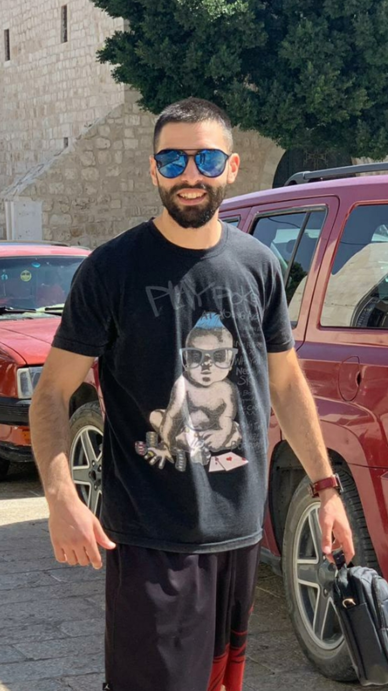
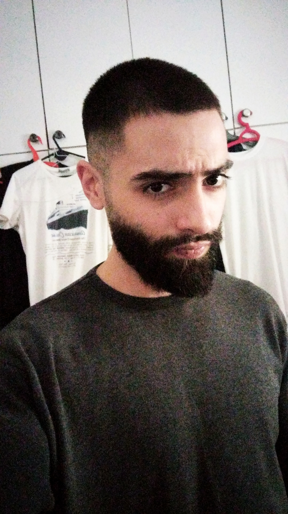
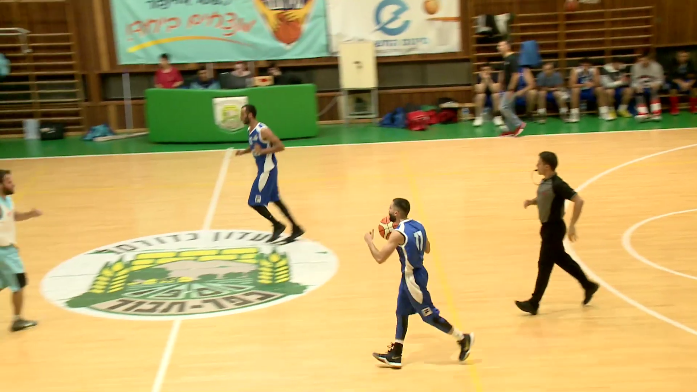
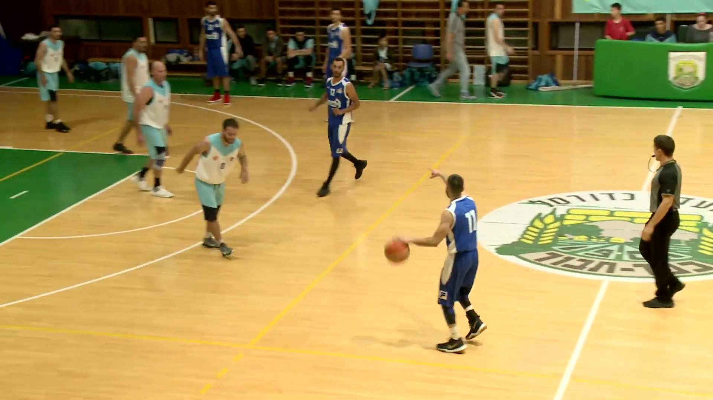

Welcome to my website
Created by Romario Nijim

About Romario
My name is Romario , I am a 24 year old male from Nazareth Israel.
I'm single and looking to make a change in my profession in order to build a career in hi-tech.
LinkedIn

Background and hobbies:
- I play basketball in the north region in my hometown Nazareth City
.
- I have experience in Finance by working in a different companies that involves Finance and Capital market such as pension companies and banking.
- Im a big fan of basketball and watch NBA and other professional leagues around the world.
- Im a big fan of U.S TV shows and I'll put a link down for you in the list below the pics.
- I love music especially hiphop.
Videos:(click on the images to see my Full Game - Enjoy :)


List of things that I like to do in my free time.
- Watch Netflix(click to see top 10 tv shows)
- Listen to music for Hours(click to see new releases of you favorite music)
- Hang out with family and friends
- Play Sports
Research About QA

Why did I choose QA

- I chose the profession QA because for so long i was looking to make a change.
- But the one thing that i loved is finance although deep down i know that i wanted to make a change for a number of reasons.
- At the time I didn't have any idea of which direction i want to start fresh.
- Until one day I came across an article on a respected website and saw that if you want to Enter the world of hi-tech you can take professional classes.
- What i found is that QA was one of the subject that you can study in order to enter the world of hi-tech.
And at the same time i felt the urge to make a change in order to have a better career.
- I decided to make the next step and study QA and Automation.
Contact Us

LinkedIn profile
Email - romario.nijim11@gmail.com
Phone Number - 0509225101
Check Out my other website - NBA news and updates.